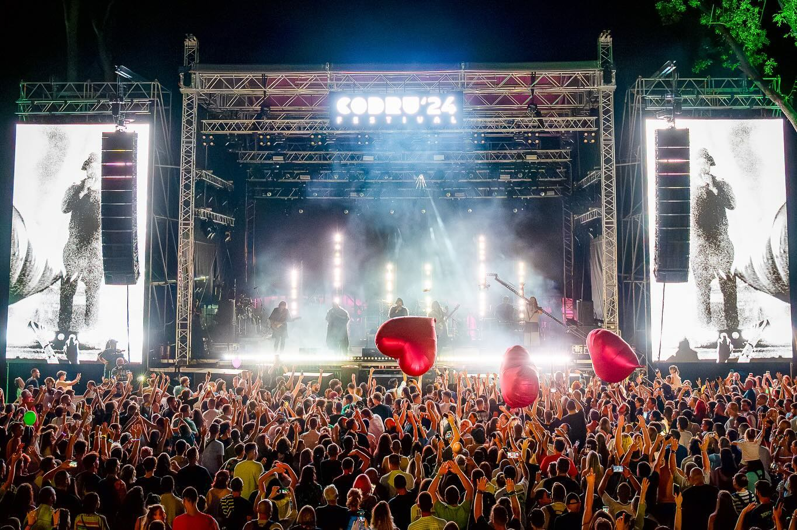
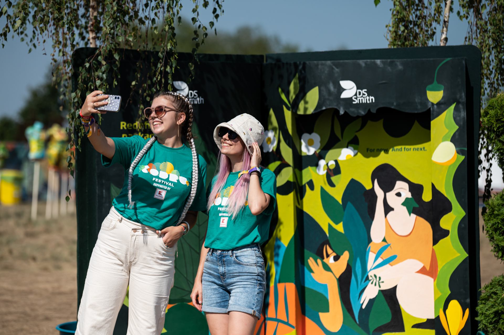

Într-o atmosferă vibrantă și plină de energie, Asociația Tineri pentru Timișoara a luat parte la Festivalul Codru, un eveniment care a adus împreună iubitori ai naturii, muzicii și inițiativelor sustenabile. Prezența noastră la festival a fost mai mult decât o simplă participare — a fost o ocazie de a interacționa cu sute de tineri, de a-i inspira și de a le oferi un spațiu în care ideile și valorile lor au fost ascultate și încurajate.
Am amenajat un stand interactiv, unde vizitatorii au putut descoperi proiectele noastre, au participat la ateliere creative și au contribuit la un panou colaborativ cu mesaje despre viitorul verde al orașului. Am discutat despre voluntariat, educație civică și implicare socială, dar mai ales am ascultat. Am ascultat povești, dorințe, visuri. Festivalul ne-a oferit oportunitatea să ne reconectăm cu natura, dar și cu oamenii. În mijlocul pădurii, între muzică și zâmbete, am înțeles încă o dată cât de importantă este comunitatea și cât de mult pot conta inițiativele mici atunci când sunt făcute cu suflet.
Le mulțumim tuturor celor care ne-au vizitat, ne-au întrebat, ne-au sprijinit. Voi sunteți dovada vie că Timișoara are tineri curajoși, implicați și dornici să creeze schimbare. Ne întoarcem de la Codru cu energie proaspătă, cu idei noi și cu inima plină.
„Pentru noi, Codru nu a fost doar un festival, ci o șansă de a aduce civismul mai aproape de oameni, într-un spațiu unde natura și implicarea merg mână în mână.”— Mihai Bogdan, președinte, Tineri pentru Timișoara